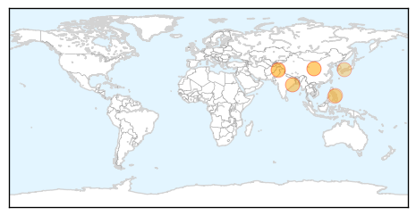
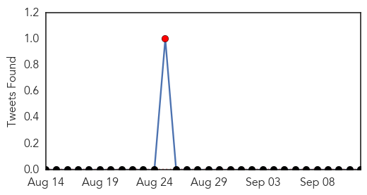

Dengue Fever
30-Day Web Trend
4 alerts, 3 warnings

30-Day Twitter Trend
0 alerts, 0 warnings

Article Locations
Article Confidences

Top Articles:
- 0.999
- Dengue Fever Outbreak Catches Tokyo by Surprise
- 0.995
- Epidemic scale: After Swat, dengue virus infects Mansehra
- 0.994
- Number of dengue virus infections in Japan rises to 115
- 0.986
- Dengue fever outbreak feared
- 0.926
- Health ministry updates manual for dengue fever
- 0.886
- Residents told: Don't panic over unconfirmed typhoid
- 0.839
- Conditions at Tata Steel plant blamed for hundreds of dengue cases in east India
- 0.752
- Conditions at Tata Steel plant blamed for hundreds of dengue cases in Odisha
- 0.749
- Cebu News, The Freeman Sections, The Freeman
Top Tweets:
-
No tweets found for Sep 12, 2014
Mumps
30-Day Web Trend
2 alerts, 0 warnings

30-Day Twitter Trend
1 alerts, 0 warnings

Article Locations

Article Confidences

Top Articles:
-
No articles found for Sep 12, 2014
Top Tweets:
-
No tweets found for Sep 12, 2014